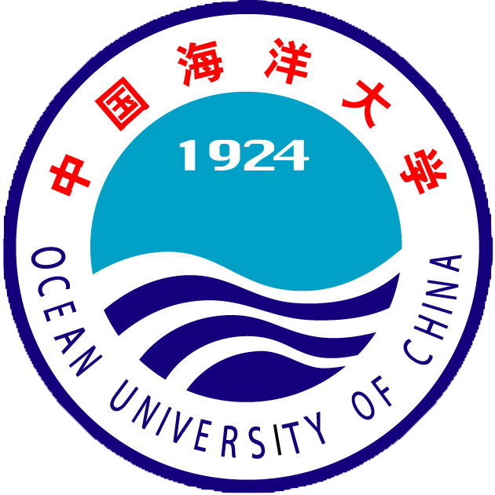
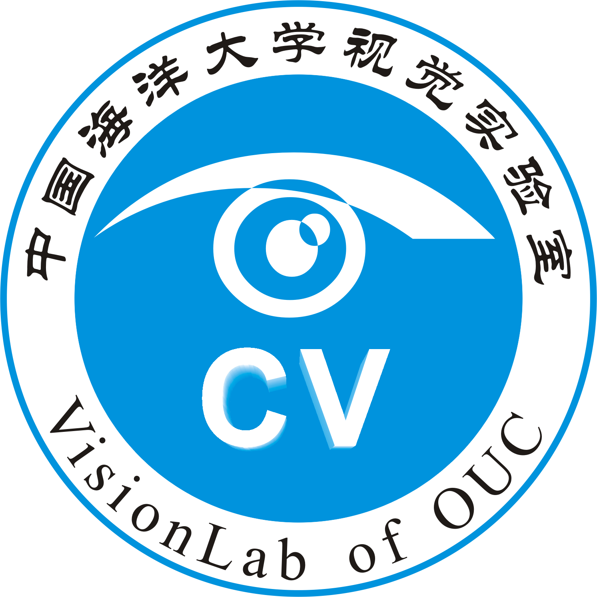
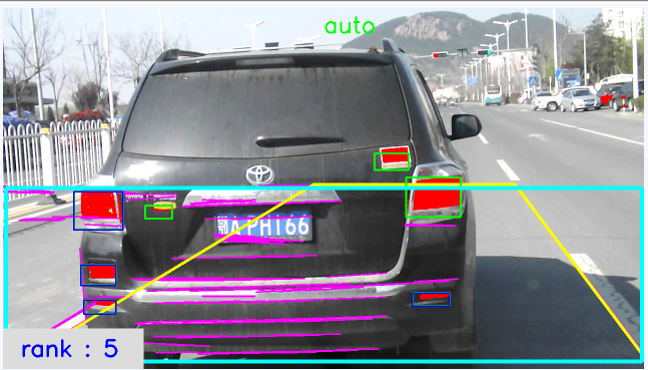
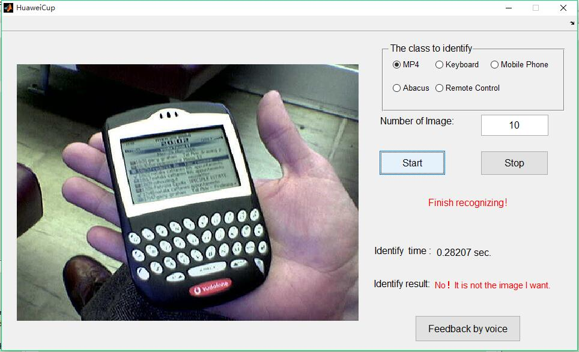
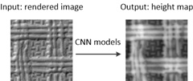
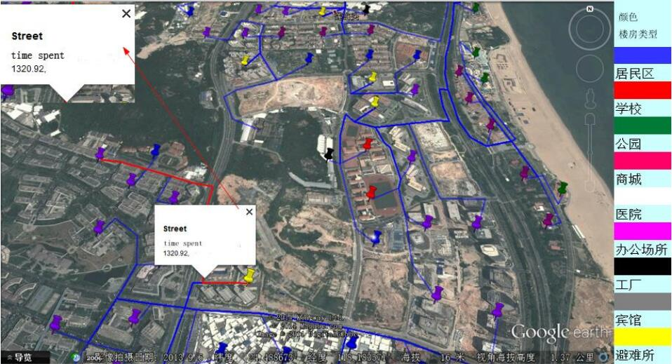

|
 |
 |
基本信息
| 姓 名： | 周小伟 |
|---|---|
| 籍 贯： | 山东省泰安市 |
| E-Mail： | zhouxiaowei1120@163.com zhouxiaowei1120@gmail.com |
| github： | https://github.com/zhouxiaowei1120 |

个人简介
周小伟，男，汉族，2014年毕业于中国海洋大学计算机科学与技术专业，获工学学士学位。同年保送至中国海洋大学计算机应用技术专业学习。目前主要从事深度学习/机器学习、数字图像处理、纹理分析等方面的研究。
自我评价
教育经历
计算机科学与技术
中国海洋大学（985高校）, 山东青岛
2010 — 2014
2010年9月，周小伟考入中国海洋大学计算机科学与技术专业学习，于2014年6月获工学学士学位。在校期间，多次获得国家、学校奖学金；多次荣获“优秀学生”称号；本科前三年成绩班级排名：2/33。
计算机应用技术/人工智能
中国海洋大学（985高校）, 山东青岛
2014 — 2017
2014年9月，周小伟保送至中国海洋大学计算机应用技术专业深造，师从于计算机科学与技术系主任、博士生导师董军宇教授，主要从事深度学习/机器学习、数字图像处理、纹理分析等方面的研究。
项目经验
基于车载的智能监控系统

中国海洋大学 — 本科生研究发展计划（SRDP）
1 年, 2012年6月 — 2013年6月
该系统主要定位于监拍前方车辆的违章行为，以及进行道路拥挤度的检测。系统首先获取安装在公交车前方的监控设备拍摄的视频，然后通过hough变化，获取监拍图像区域的车道线，最后通过车辆尾灯的对称性，定位视频中的车辆。
演示视频:
基于车载的智能监控系统
物体自动识别系统

第五届 — 华为杯中国大学生智能设计大赛
1 月, 2015年5月 — 2015年6月
系统采用深度网络模型Decaf进行特征提取，将提取特征送入到融合了在线学习方法的分类器中实现图像中物体的准确识别。对于识别结果，本作品采用DTW语音模型对识别结果进行人工矫正。
演示视频:
物体自动识别系统
基于深度学习的单幅图像表面高度图估计

国家自然科学基金项目 — 符合视觉感知机理的自然纹理生成模式研究
2015年9月 — 2017年6月
本研究提出了一种基于卷积神经网络估计图像高度图的新方法。所提出的方法可以不借助任何其它设备或额外的先验知识，从一幅单一的图像估算拍摄物体的表面高度图。
Github项目:
HeightEstimation
海啸人员疏散图的研究

中国海洋大学青年教师基金项目 — 本科生毕业设计
2 月, 2014年3月 — 2014年5月
本研究基于COMCOT数值模式生成的海啸仿真数据和遥感卫星获得的高分辨率遥感地图，通过 MapInfo 工具从地图中提取路网，采用 Dijkstra 算法求解人群疏散的最短路径，从而建立海啸人员疏散图。本课题从人口分布估算，海啸淹没范围确定，避难所选定，道路通行能力分析，最短路径求解等五个方面进行分析研究。
Github项目:
GraduDesign
其他相关比赛
中国海洋大学第三届“朗讯杯”科技实训大赛
2013年1月
第13届“挑战杯”中国海洋大学大学生课外学术科技作品竞赛
2013年5月
2015年第五届“华为杯”中国大学生智能设计竞赛
2015年8月
个人技能
曾获奖励
| 获奖时间 | 获奖名称 | 获奖时间 | 获奖名称 |
|---|---|---|---|
| 2017年05月 | 山东省优秀毕业生 | 2016年12月 | 中国海洋大学国开行励志奖学金 |
| 2015年12月 | 中国海洋大学东升研究生奖学金 | 2015年11月 | 中国海洋大学优秀研究生干部 |
| 2015年08月 | 2015年第五届“华为杯”中国大学生智能设计竞赛三等奖 | 2015年06月 | 信息科学与工程学院优秀共产党员 |
| 2015年04月 | 中国海洋大学优秀青年志愿者 | 2015年03月 | 中国海洋大学硕士研究生优秀生源奖学金 |
| 2014年06月 | 山东省优秀毕业生 | 2014年05月 | 山东省高等学校优秀学生 |
| 2014年04月 | 中国海洋大学优秀团干部 | 2014年03月 | 中国海洋大学2014届优秀毕业生 |
| 2013年11月 | 国家励志奖学金 | 2013年11月 | 中国海洋大学优秀学生 |
| 2013年11月 | 中国海洋大学学习优秀二等奖学金 | 2013年11月 | 中国海洋大学科技创新奖学金 |
| 2013年11月 | 中国海洋大学社会实践奖学金 | 2013年06月 | 第十五届中国海洋大学大学生科技成果奖二等奖 |
| 2013年05月 | 第13届“挑战杯”中国海洋大学大学生课外学术科技作品三等奖 | 2013年04月 | 中国海洋大学“优秀团员”称号 |
| 2013年01月 | 中国海洋大学第三届“朗讯杯”科技实训大赛高级组三等奖 | 2012年12月 | 中国海洋大学学习优秀二等奖学金 |
| 2012年12月 | 中国海洋大学社会实践奖学金 | 2012年12月 | 中国海洋大学“优秀学生干部”称号 |
| 2012年12月 | 全国大学生数学建模大赛山东赛区一等奖 | 2012年11月 | 国家励志奖学金 |
| 2012年05月 | 中国海洋大学第一届“华为杯”编程大赛初级组三等奖 | 2012年04月 | 中国海洋大学“优秀团员”称号 |
| 2012年04月 | 2012年“蓝桥杯”全国软件专业人才设计与创业大赛山东赛区C/C++程序设计本科生组三等奖 | 2011年12月 | 中国海洋大学“优秀学生”称号 |
| 2011年12月 | 中国海洋大学学习优秀一等奖学金 | 2011年11月 | 国家励志奖学金 |
发表文章
[1] Zhou X, Zhong G, Qi L, et al. Surface height map estimation from a single image using convolutional neural networks[C]//Eighth International Conference on Graphic and Image Processing. International Society for Optics and Photonics, 2017: 1022524-1022524-6.(EI).
[2] 解翠, 寻锦锦, 周小伟, & 董军宇. 海啸可视化仿真及灾害风险评估[J]. 系统仿真学报, 2016 (2016 年 10): 2567-2572, 2577. (EI)
[3] 解翠, 寻锦锦, 周小伟, 张晓旭, 董军宇: 海啸可视化仿真及灾害分析.2014年第一届可视分析大会，2014.7.19 — 2014.7.20, 北京， 2014/7， 墙报展示.